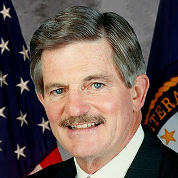
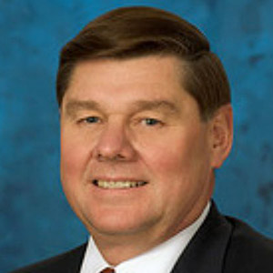

How the VA’s Aurora hospital project spiraled out of control
A 2011 meeting between officials from the veterans affairs department and its construction contractor set the stage for financial disaster.
The biggest construction failure in VA history began with a handwritten note signed two days before Veterans Day 2011.
On that Nov. 9, project officials from the U.S. Department of Veterans Affairs were locked in a 7½-hour meeting with executives from Kiewit-Turner, the construction team tapped to build a hospital in Aurora for the agency.
The purpose was to settle on a final price, but negotiations had not gone well.
When KT joined the project more than a year earlier, the estimated cost to build it was $582.8 million, with the goal of finishing the medical complex in 2014. But after several months of pre-construction work, KT executives were convinced the figure was too low.
So the two sides put together what became known as “The Book,” a paint-by-numbers guide that spelled out a plan to build the hospital for $604 million. In it, KT agreed to the price but insisted on design changes and other allowances to reduce costs.
But a key VA executive found those terms unacceptable.
Chris Kyrgos, who helped run the Aurora project from Washington, D.C., had flown in for the Colorado meeting. He had not looked at the book — as he would later testify in a lawsuit arising from the project — but he insisted the document be thrown out.
“This is for health care,” Kyrgos testified. “This is something the VA cannot sacrifice.” He walked out of the meeting at one point, threatening to call off the talks and find another contractor.
The 70-word handwritten note that saved the deal but set the stage for a financial disaster. PDF
What saved the deal was a simple proposal — and a pen and paper. Rather than fight over the book’s details, negotiators agreed to shrink the deal to a handwritten note of 70 words with two basic terms: KT would build the hospital for $604 million, and the VA would provide the design to get them there. 1
That brief note became the pact to start work on a state-of-the-art medical campus spread across 31 acres.
Its signing also marked the moment when the VA hospital in Aurora began to devolve from a mismanaged project to a national calamity.
The VA could not hold up its end of the deal and control its designers, who initially operated under a contract that left the construction price blank. It later battled KT in court for 17 months and lost. The agency stonewalled elected officials as costs, delays and questions mounted, and its own investigative staff did nothing.
VA officials pressed ahead with the project despite repeated warnings — internal and external — about the project’s high risk of busting its budget.
Congress, too, shares blame. Colorado’s delegation was largely ineffective — and often impotent — in keeping the project on track. The most they did was ensure, early in the process, that the VA would build the hospital as a stand-alone complex even though a less expensive option existed.

Joe Amon, Denver Post file An aerial view of the northern end of the VA hospital in Aurora during construction in April.
To tell the story of the troubled project, The Denver Post read hundreds of court documents, interviewed dozens of those involved and reviewed congressional testimony going back a decade.
Even now, there is no agreement on fully funding the new medical campus, which the VA admitted in March could cost a stunning $1.73 billion. The design includes features such as a curved lobby spanning two city blocks, 43 elevators and a vivarium for animal experiments. The cost is five times an initial $328 million estimate and nearly three times the $604 million construction target.
This outcome, however, was far from the minds of KT and VA officials the night they agreed to handwritten terms. They codified their note as Supplemental Agreement 007 and later showcased the project with a slideshow.
The presentation included photos of seven actors who played James Bond, Special Agent 007, with one frame declaring “in every instance we all leave debonair, smiling and alive.” 2
They were right on one count: The major players are still alive.
A modern replacement
Like many area veterans, Jim Sack has waited two decades for a modern replacement for the aging Denver VA hospital.
The new medical center in Aurora will have 30 beds for veterans with spinal-cord injuries, something the existing hospital does not have. But it will come too late for Sack’s current treatment.
Sack, 67, who uses a wheelchair, flew to California in March for surgery and rehabilitation at a spinal-cord center there. He’s being treated for a severe pressure sore and considered the hospital in Long Beach the best option for the surgery.
Cyrus McCrimmon, The Denver Post Jim Sack, 67, at the Long Beach VA hospital in July. The U.S. Navy veteran came to California to the spinal cord injury center at the hospital to receive treatment for a pressure sore.
He’s still there, alone. Two of his brothers have visited him during the five-month stay.
“We get that new VA hospital, it’ll be a heck of a lot more convenient,” the Vietnam veteran said. “This thing should have been built 10 years ago, and it would have been a hell of a lot cheaper.”
In Aurora, the new medical center will feature expanded services such as mammography for a growing number of women veterans, roomier clinics, private hospital rooms and abundant parking. It is designed to serve about 400,000 veterans living in Colorado and neighboring states.
A less ambitious and less costly replacement for the Denver hospital, which opened in 1950, could have been chosen at various times over the past 20 years, but the concept never took hold.
In 1995, with the Fitzsimons Army Medical Center scheduled to close, the VA had a chance to claim its hospital and land at the site. But a top department official quashed that idea, recommending against spending an estimated $30 million for moving and renovation costs.
Several years later, local VA officials hit upon another plan to improve veterans’ care. They would cement their relationship with University of Colorado Hospital — which was moving to the Fitzsimons site — by sharing its new facility.
Cyrus McCrimmon, The Denver Post Sack works out with physical therapist Joayn Truong as he tries to regain strength and relearn how to get out of a bed and into his wheelchair.
In 2004, VA announced it would build a replacement VA medical center in Aurora, “with some shared facilities with the University of Colorado.”
But support for the shared facility began to fall apart after the American Legion voiced its opposition. The powerful veterans group worried that vets would not receive the treatment they deserved if it were in a shared facility. The Colorado delegation, which had backed the idea of joint space, eventually fell in line for a separate VA campus.
In January 2009, when newly elected President Barack Obama nominated Gen. Eric Shinseki to become VA secretary, the Colorado delegation made its position clear.
By then, the cost estimate was already up to $568 million and rising steadily.
“We acknowledge and understand overall cost estimates for this project continue to outpace initial projections,” Colorado’s lawmakers wrote to Shinseki. “However, we also consider it unsuitable to compromise the project to the point it can no longer function as a stand-alone facility.”
The letter was signed by eight of nine Colorado members of Congress, including incumbent Reps. Diana DeGette, Ed Perlmutter, Doug Lamborn and Mike Coffman. 3
The lone exception was Rep. Jared Polis, who had just taken office. Polis co-signed a delegation letter to Shinseki two months later calling a stand-alone hospital “essential in order to meet the needs of veterans throughout the Rocky Mountain region.”
Shinseki granted their wish, permanently scrapping the idea of a shared hospital.
Years later, at a meeting in May 2012, Shinseki joked about the decision.
“Sure as hell I wish I had this back. I wouldn’t have been so bold,” he said to laughter, according to a transcript. 4
Unfamiliar to agency
One reason the cost of the Aurora hospital has risen over the years is the VA decision to use a contracting method — known as integrated design and construct, or IDC — that is largely unfamiliar to the agency.
No major VA project had ever been completed using an IDC contract. None of its project leaders in Colorado were experienced with it.
Timeline: VA debacle in Aurora
Two decades after the VA began considering a replacement for its Denver hospital, veterans are still waiting for the new facility to open, and costs have soared to $1.67 billion. Here’s how it happened.
The U.S. Department of Veterans Affairs has a chance to take over the closing Fitzsimons Army Medical Center. The department’s undersecretary for health, however, recommends against paying an estimated $30 million for moving and renovation costs.
The University of Colorado discusses the possibility of a shared hospital with the VA at the Fitzsimons site.
Anthony Principi becomes VA secretary.
Principi endorses the idea of a shared hospital.
A VA consultant report recommends a shared hospital.
Principi announces the VA will build a medical center on the Fitzsimons campus with “some shared facilities” with the university.
The VA estimates project cost at $328 million.
The VA inspector general finds deplorable conditions at the Denver hospital, but notes the previously announced plan to move.
Principi kills the shared hospital plan after veterans object to it. He says the university could not offer the 38 acres the VA needs.
Jim Nicholson becomes VA secretary.
The VA settles on a separate 31-acre site at Fitzsimons for a 1.1 million-square-foot hospital. Construction envisioned in 2008.
The VA contracts with an architect and engineering team, but work is suspended as project plans change.
The House Appropriations Committee votes to cut off funding, noting that the proposed hospital has nearly doubled in price, to $621 million, in two years. The Senate, however includes money for the project in its budget.
Nicholson announces a stand-alone medical campus covering 1.4 million square feet on 31 acres. Price is pegged at $523 million.
The design team goes back to work.
James Peake becomes VA secretary.
Peake reverses course, reviving the idea of a shared hospital and warning Congress that the cost estimate has reached $1 billion. Angry veterans rally at the Colorado Capitol.
Colorado’s congressional delegation urges Gen. Eric Shinseki, President Obama’s nominee for VA secretary, to return to a stand-alone hospital despite rising cost estimates.
Shinseki becomes VA secretary.
Shinseki announces a stand-alone hospital campus, killing the shared hospital plan.
An early estimate for the hospital’s main concourse is $13 million.
Shinseki joins veterans and elected officials for a ceremonial groundbreaking at the site.
VA chooses Kiewit-Turner to provide pre-construction services. The department tries an unfamiliar contracting method that calls for the builder to join the architect early in the design phase.
KT alleges the design is already $76 million over budget.
A confidential Army Corps of Engineers report warns that the VA is not using the new contracting method correctly because much of the design work was done before the contractor was hired.
An impasse is broken by a 70-word agreement that obliges the VA to provide a design within a $604 million construction budget. 1
Construction begins on a 13-building medical campus.
KT sends letter to the VA saying new design specifications have a “significant cost impact” on the project.
Final design documents arrive. But a VA consultant estimates they are only 80 percent complete, and a VA engineer says they are missing critical elements.
The consultant, Jacobs Engineering, estimates the project is already $200 million over budget. The VA does not inform the contractor but sends a letter to the design team directing them to get the construction costs back to $604 million.
KT offers a new firm price of $897 million. The VA rejects it.
The U.S. Government Accountability Office reports that all four of VA’s major medical centers are hundreds of millions of dollars over initial estimates to Congress, with the Aurora project leading the way. VA officials tell investigators there have been no cost overruns since construction began.
KT sues the VA, alleging that the government breached the contract. It estimates the medical center will cost more than $1 billion.
Rep. Mike Coffman, the Aurora district’s congressman, asks for a detailed explanation of project cost overruns. The VA inspector general rejects the request, citing pending litigation.
The Colorado delegation meets with VA chief of staff Jose Riojas, construction chief Glenn Haggstrom and Phillipa Anderson, the lead attorney, to urge a mediated settlement. Rep. Ed Perlmutter says he warned VA officials they would lose the case.
Robert McDonald becomes VA secretary.
The Civilian Board of Contract Appeals hands the VA a crushing defeat, ruling that the agency drove up the cost of the project. Construction shuts down, but restarts with money from Congress and an interim contract.
A Corps of Engineers review of the project brings the cost estimate to a stunning new total: $1.73 billion. Haggstrom retires with full benefits.
Construction nearly shuts down a second time until a last-minute deal in Congress keeps the project alive for a few more months. Veterans rally to “finish the damn thing.”
The VA scales back the cost estimate to $1.675 billion by delaying a nursing home and post-traumatic stress center. A blind rehabilitation program also is delayed. The changes reduce hospital beds from 182 to 148. Attorney Anderson retires with full benefits.
The VA issues new building-by-building cost estimates. The buildings, including parking garages, have doubled to tripled in cost. The arched main concourse, which one construction executive called possibly the largest hospital lobby in the world, is expected to cost $120 million.
Source: Department of Veterans Affairs, court records, Denver Post research
The whole idea of IDC was to bring the contractor aboard early to assist the designer and accelerate construction. Yet in Aurora, the designers had been working sporadically for four years when KT was hired in 2010 to provide pre-construction advice.
That proved a recipe for conflict, delay and rising costs.
By August 2011, a consultant had pegged the price at $677.7 million. A VA pre-construction project management plan at that time listed 27 high risks, from cost overruns to insufficient staffing, poor communication, an unfamiliar contracting method, a need to rein in the architect and “slow or unclear decisionmaking.” 5
Meanwhile, pressure mounted for the VA and its contractor to reach a deal to start construction. Veterans were frustrated and angry. Perlmutter, the district’s congressman at that time, threatened to accompany them with shovels to a Veterans Day protest.
Under this cloud, the VA and KT got together on Nov. 9, 2011, to hammer out an agreement.
KT wanted its book to take precedence over design-team specifications. Dewey Newton, a KT executive, testified the design plan featured “custom glass, custom walls, custom wood and custom floors.”
When the two sides met in a brick building at the site that once belonged to a doctors group, the local VA team thought they had a deal. But Kyrgos, the VA executive from Washington, saw too many caveats. “We’re not accepting the stipulations,” he recalled saying. “I said, ‘Look, we mean business. We cannot play around any more.’ ”
After walking out and being coaxed to return, Kyrgos accepted an agreement that excluded the book. The first paragraph of the “path forward" agreement originally read, “All parties agree that they must get price to $604 mil. They will each expend resources to reach that goal.” Kyrgos decided that wasn’t strong enough. He changed “reach” to “keep.”
The second paragraph would prove deadly in court: “VA shall cause JVT (the joint venture design team) to produce a design that meets their ECCA (estimated construction cost at award)….”
Elated messages followed the signing.
“We just reached an agreement with KT after long and hard negotiations,” Kyrgos wrote at 9:58 p.m. to top VA construction officials, calling it “a great deal for the VA.”
“Congratulations to all of you,” a regional VA leader replied at 11:49 p.m. “Great job!”
Kyrgos, who retired from the VA this year, declined to comment for this story.
Issues with the design
From the project’s earliest days, there were issues with the design.
In January 2006,a high-powered coalition of architects and engineers was contracted to develop a blueprint for the facility. Later, work would be suspended twice as the VA changed size and budget estimates.
Two companies led the group on the architectural side: Skidmore, Owings & Merrill in Chicago and H+L Architecture in Denver. The engineering component was managed by Cator Ruma & Associates in Lakewood and S.A. Miro Inc. in Denver.
As many as 24 firms were involved at one point, according to congressional estimates. But by the fall of 2011, the coalition had major concerns.
About a month before the VA and KT signed their handwritten agreement, Skidmore’s Thomas Fromm, the JVT director, wrote the VA and warned against going forward 6. His worry: KT and the design team remained at odds over the estimated cost.
“If the VA proceeds,” Fromm wrote, “there will be no agreed-upon financial baseline against which the parties will be able to measure and control costs and identify cost overruns, which we expect to be substantial.”
RJ Sangosti, Denver Post File Builders at the Aurora VA hospital under construction in April.
More construction photos
The lack of agreement on price, Fromm wrote, imposed “high risk on the project.” And in a line that would prove prophetic, Fromm cautioned that signing a contract at that time could “result in significant claims against the VA.”
Much of the debate centered on so-called “indirect costs,” which typically include items such as temporary structures on the site for safety or access.
In court testimony, the project’s contracting officer, Thaddeus Willoughby, acknowledged the debate over indirect costs, but said he felt it could be handled later and that the direct cost estimates were “close enough” to “move forward with the design.”
The assessment proved overly optimistic.
After it agreed to the November 2011 deal, the VA clashed repeatedly with its designers as it tried — and failed — to develop a hospital plan that would fit within a $604 million budget.
Early proposals for the complex never came close to that amount. In 2008, Colorado lawmakers raised concerns about a plan purported to cost about $1.1 billion — nearly twice as much.
One submission envisioned a medical complex that would span 1.6 million square feet. It also featured the same layout seen in the project today — several buildings jutting from either side of a central spine structure.
“The quality of care will be second to none and nonnegotiable,” noted a summary of the design. “The physical facility will stand up to any comparison to any other medical center.”
Asked about the $1.1 billion cost estimate, design team spokesman Andy Boian said it was for a “different and much larger project plan, as requested by the (VA), than the one now under construction.”
But according to documents filed by KT in its lawsuit, the design team operated initially without worrying about the project’s final cost — at least contractually.
The provision that “sets the ‘estimated construction contract price’ was left blank in the original contract,” KT attorneys noted. 7,8
Boian said that prior to 2010, the target price “varied as the VA changed the location and size of the facility it needed.”
Features viewed as excessive
Records of early design plans are scarce, but KT’s court filings make mention of several features the construction company considered excessive. Among them: an “expensive saw-tooth ‘zig-zag’ design" on the west side of the concourse that was described as an “aesthetic” function with no impact on patient care.
Though its removal was suggested by KT and VA officials, according to court documents, the zigzag feature remains part of the design.
VA’s golden arch: A $120 million corridor
Mike Colpack, a longtime Kiewit Corp. executive, called it “a humongous lobby,” possibly the world’s largest concourse “for health care or a building facility.”
Department of Veterans Affairs engineer James Chang cited it as an example of “gold-plating” a hospital design...
Parking was an issue, too, including the south visitors parking lot.
One proposal called for part of the structure to be built underground — a costly approach because that would require “foundation walls, waterproofing and subgrade foundation systems,” according to court records.
A suggestion to lower the cost by bringing the whole garage above-ground and then adding levels to another parking lot was rejected.
Tim Pogany, the VA’s project manager in Aurora, testified that he once considered firing the design team because they listened to the advice of a former VA secretary who told them, “The pie in the sky is what we’re shooting for here, so whatever you want from the Denver area, I will get you, whatever additional funds you need, so design me what the Medical Center wants.”
Pogany said the secretary was Jim Nicholson, a former Denver resident and Republican National Committee chairman who led the agency from 2005 to 2007.
In a December 2006 interview, Nicholson did call the Aurora project a “state-of-the-art showcase” after securing land for the new VA hospital.
RJ Sangosti, Denver Post file The VA hospital in Aurora was scheduled to open in 2014 when the construction contractor joined the project in 2010. Now officials say it will open by the end of 2017.
More construction photos
But Nicholson, when contacted by The Post, emphatically disputed Pogany’s testimony, calling the “pie in the sky” comment “absurd on its face.”
He said he does not know Pogany and does not remember meeting the designers, let alone advising them not to worry about the cost.
“Believe me, that’s not me,” he said.
Pogany, who was reassigned to another VA position in 2013, said in a statement to The Post that he was “referring to my understanding that the design team had one opportunity to design a facility that would meet the true needs of the Veterans in Denver instead of a design that would fit the project budget at that time.
“This was my interpretation about the early design efforts of the first schematic design of the Denver project, which was ultimately canceled,” he said.
Letters between the VA and its designers suggest an often-hostile relationship.
A few weeks after agreeing to the KT deal, the VA wrote the design team and made clear it expected a plan that would fit within the budget. 9
Fromm responded in January 2012 with his own letter that accused the VA of ignoring them and withholding crucial information. 10
“Proceeding with construction on such a major project without a common understanding of and access to the project’s documents of record would be reckless on our part as it would be foolish on the government’s part,” he wrote.
Another factor was time. The VA didn’t have another firm lined up to peer review the design work, a critical oversight. This failure — coupled with already-poor communication — delayed the delivery of plans until August 2012, months behind schedule.
When they did arrive, KT attorneys noted the plans “had to be revised at least once, which had a significant impact on the subcontractor community who lost confidence in the project and its design.”
These issues came to a head in January 2013 when Jacobs Engineering Group, which assisted the VA in managing the project, released its own estimate that put the cost of construction at nearly $785 million.
The estimate sent shockwaves across the VA. In response, Willoughby sent a letter to the design team demanding more changes.
By this point, however, it was clear the project was falling apart. VA officials began to map out options for an escape plan that included the possibility of ditching KT.
“KT is putting our project in jeopardy and (the design team) is not helping,” Kyrgos wrote in one e-mail.
In a 12-page evaluation of each option, VA predicted that keeping KT could prove costly.
“Expect a court battle on a large claim,” the analysis noted. “KT could decide to refuse to continue without assurance of additional funds, leading to KT walking off the job.”
In this instance, the VA’s foresight was strikingly accurate.
Progress
Watch the site of the Aurora VA hospital project as the area has changed since 2001 through satellite imagery captured from Google Earth.
Imagery by DigitalGlobe, U.S. Geological Survey and Google, via Google Earth
Congress on the sidelines
Even as the Aurora project slid toward disaster, one key player — Congress — spent much of its time on the sidelines.
Part of this is by design. As a separate branch of government, Congress is limited in the authority it can wield over executive agencies such as the VA. Although Congress controls the flow of money, there’s only so much pressure it can apply.
That said, congressional oversight of the Aurora project reads like a hit list of dead ends and missed opportunities.
Take the case of congressman Perlmutter, the Arvada Democrat who was instrumental in pushing the VA to build a stand-alone facility, but who also did more than most in trying to keep the project on track.
Perlmutter planned to visit the construction site in December 2012, prompting project officials to put aside their differences with KT to coordinate a response.
At the time, the Government Accountability Office, which acts as the investigative arm of Congress, was preparing an audit of the project.
“Heads up,” wrote Pogany in one e-mail. “We need to work with (KT) to develop what our message is.”
Daniel Warvi, a VA spokesman, proposed they “take Rep. Perlmutter outside to the job site first and then bring him back in for a briefing afterwards. He might be more inclined to hearing a shorter briefing that way.”
But Perlmutter was called back to Washington and never made the trip. Looking back, the congressman said he thinks about what more he could have done — as well as the difficulty in piercing the VA’s bureaucracy.
“Of all the federal government agencies, this has been the most difficult, in terms of working with them,” he said. “It’s a bureaucracy that’s calcified, with an attitude that those in Congress will be long gone and they’ll still be there.”
That challenge also applies to the VA’s internal watchdog — the Office of Inspector General. On two occasions, members of Colorado’s congressional delegation asked for investigations into the Aurora project and were rebuffed.
In each case — first by congressman Coffman in 2013 and then by Sen. Michael Bennet in 2014 — the OIG response was that it did not want to get involved because of the court battle between KT and the VA.
An investigation could be “viewed by the VA and the contractor as interfering in the litigation,” Richard Griffin, then the deputy inspector general, wrote in a 2013 letter. Griffin later became OIG’s acting chief.
The White House, too, had a blind spot when it came to the Aurora hospital — as well as other over-budget VA projects. It was only in May 2014 that Obama dispatched Rob Nabors, one of his most trusted advisers, to the VA to help right the ship.
The line in the sand — for Congress and the administration — was the GAO’s report, issued in April 2013. 11
The report blew open the doors on the problems in Aurora, as well as VA facilities in Florida, Louisiana and Nevada. It found that all four projects faced major schedule delays and a combined price increase of nearly $1.5 billion.
It’s an estimate that has since proven to be too low.
The expected cost at the time for the Aurora facility was $800 million, according to the GAO. It hit $1.73 billion and has scaled back to about $1.67 billion by delaying a nursing home and a building to treat post-traumatic stress disorder. A rehabilitation program for the blind also was delayed.
These changes reduced the number of beds from 182 to 148. The price tag does not include $340 million needed to fill the facility with furniture and equipment.
Attention from Colorado’s congressional delegation shot up sharply after the release of the GAO report — although there were exceptions.
Since his election in 2006, congressman Lamborn of Colorado Springs has sat on the House Committee on Veterans’ Affairs. He also serves on its oversight and investigations subcommittee.
But records show Lamborn has missed critical VA meetings or left them early, including the hearing about the GAO report. Missing or leaving committee hearings is not uncommon among lawmakers, but Lamborn’s timing was striking.
Doug Lamborn House Committee on Veterans’ Affairs hearing, April 15.
At an April 15 hearing this year — which focused on the Aurora project and its problems — Lamborn gave a short delivery and asked several questions.
“I don’t even know where to begin. This is just beyond my comprehension — how we got to this point. I’m appalled and angry,” he said.
Lamborn then left the hearing, which lasted about two more hours.
His staff said he had schedule conflicts those two days and that he has taken part in dozens of phone calls and other meetings concerning the project.
In a statement, Lamborn said he joined the oversight and investigations subcommittee in 2011 “due to my growing concern over lack of accountability within the VA.” In multiple hearings since then, “we have asked tough questions of VA officials and have become increasingly concerned over VA’s in-house construction capability,” he said.
“Lessons learned”
Facing questions from lawmakers about overspending on hospital projects in Aurora and elsewhere, VA officials have frequently remarked that they learned lessons from these mistakes.
VA obstinacy
The lack of oversight was made worse by VA obstinacy. In dealing with Congress, agency officials often closed ranks and shielded internal decisions.
At a House hearing in May 2013 to examine the GAO report’s findings as well as the pace of VA construction, frustrated members of Congress got few answers.
“One of the most distressing items in the (GAO) report is that VA failed to learn from its mistakes as it went from project to project,” said Coffman, whose congressional district included the hospital starting in early 2013.
But Coffman was told not to worry.
“The lessons we have learned from (the project in Orlando, Fla.) and other past major construction projects are guiding us in our management of the Denver and New Orleans replacement hospitals,” said Glenn Haggstrom, then the VA’s construction chief.
It was one of numerous instances beginning as early as 2006 in which VA officials held lawmakers at arm’s length, insisting they had learned from their experience.
In July 2013, KT sued VA for breaching its contract.
At a hearing five months later, Haggstrom again deflected questions about Aurora, but with a twist.
“VA will not be able to respond to the matters at issue in the litigation as it may compromise the government’s legal position,” he said, adding that “the VA has changed the way it conducts business significantly.”
Haggstrom left the agency shortly afterward just as VA investigators queried him about the project.
He was one of just two VA officials who suffered any ramification for the debacle in Aurora — and, even then, the impact on his career was minimal.
He retired in March with full benefits, after collecting $63,777 in bonuses from 2009 to 2013.
“I’m not going to say I’m not accountable, but I was not on the site on a day-to-day basis,” Haggstrom said in an interview outside his northern Virginia home.
He did not offer much in terms of explanation for what happened, but he noted the VA’s construction division worked closely with the agency’s in-house legal team, which battled KT in court.
Lawmakers such as Bennet and Perlmutter said they told the VA that fighting KT was a losing strategy and that the agency should settle.
The VA never did. The result was a crushing decision against the agency in December by the U.S. Civilian Board of Contract Appeals. 12
The court found the behavior of VA officials did not comport with “standards of good faith and fair dealings required by law.” The VA never gave KT a workable design — in part because it “did not control its designer" — and, when presented with more cost-effective options, VA officials “paid no heed.”
Phillipa Anderson, who led the VA legal team that developed the Aurora contract and fought KT in court, retired last spring after being questioned about her role.
Every other senior executive involved, VA officials say, is gone from the project. Many have retired, and lower-level staffers are working elsewhere in the agency.
At a recent congressional hearing, VA Secretary Robert McDonald said nine of the 17 top leaders at the VA are new since he took the helm in July 2014.
RJ Sangosti, Denver Post file Lawmakers tour the hospital construction site in April 2014. At the time the price was estimated at more than $1 billion and has since risen to $1.67 billion.
More construction photos
That no one is being punished for what happened is a sore point for lawmakers. “The parade of VA executives who retire or resign in lieu of any form of accountability is nothing short of insulting to veterans and taxpayers,” said Rep. Jeff Miller, chair of the House veterans committee, in March.
One obstacle, perhaps, is the disarray of the project itself and the finger-pointing that went along with the court fight between the VA and KT.
Willoughby objected that the senior resident engineer, Thomas Hayden, was unqualified for the job. But Hayden had been referred by Haggstrom, according to a KT summary of Haggstrom’s testimony, and kept his position until mid-2013.
Judi Guy, the Denver medical center’s project coordinator, tried to get rid of Pogany, the project executive. She testified that he failed to control the designers. But the medical center itself requested more than 1,400 design changes, according to court records. Guy explained that the budget was not her responsibility and nobody told her to stop asking for things.
In a statement, VA spokesman Paul Sherbo characterized the design-change requests as comments, many repetitive in nature, which resulted in minor changes. “The VA elected not to incorporate the majority of those which would have had additional design and/or construction cost,” he said.
The VA has not released specific examples of what was contained in those requests.
James Chang, another project engineer, testified that design questions piled up in Hayden’s office for a year or more, slowing the project. Engineers also complained that Hayden prized secrecy.
Sometimes project leaders haggled at length over small details. They spent six months, for example, deciding where the sinks should be installed in an MRI lab.
“The record is replete with instances in which the agency’s on-site personnel … lacked confidence in each other’s abilities and respect for each other’s actions,” the appeals judges wrote in their decision.
The board also noted that James Lynn, the Jacobs Engineering consultant who brokered the handwritten 007 agreement, “described this group, prior to a shake-up in June 2013, as the least effective and most dysfunctional staff on any project that he had ever seen.”
Key VA officials in Aurora project
The U.S Department of Veterans Affairs has not fired anyone associated with the delayed and over-budget hospital project in Aurora.
-
Anthony Principi

Served as VA secretary during the first term of George W. Bush, from 2001 to 2005. He pushed the idea of a shared hospital with the University of Colorado, but veterans objected.
Est. salary: $175,700 (2004)
-
Jim Nicholson
Succeeded Principi in Bush’s second term, serving from January 2005 to October 2007. A decorated Vietnam War veteran, he secured land for a stand-alone facility in Aurora.
Est. salary: $186,600 (2007)
-
Eric Shinseki
VA secretary when Aurora hospital construction began. Resigned in 2014 over Phoenix waiting-list scandal.
Est. salary: $199,700 (2013)
-
Robert McDonald
New VA secretary, replaced Eric Shinseki. Responsible for persuading Congress that the VA has an appropriate plan for finishing its Aurora medical center.
Est. salary: $199,700
Sloan Gibson
New deputy VA secretary. Agency’s point man on the Aurora hospital crisis. Calls previous mistakes unacceptable.
Est. salary: $179,700
Glenn Haggstrom
Principal executive director, Office of Acquisition, Logistics and Construction. Retired in 2015 after being questioned about cost overruns and delays on the Aurora project.
Est. salary: $181,497
Robert Neary
Former acting director of Office of Construction and Facilities Management. Helped plan Aurora project before retiring at the end of 2012.
Est. salary: $179,700 (2012)
Stella Fiotes

Executive director, Office of Construction and Facilities Management. Responsible for VA construction projects.
Est. salary: $179,700
Phillipa Anderson
Assistant general counsel, led VA legal staff from development of Aurora contract through litigation with contractor Kiewit-Turner. Retired in 2015 amid VA-initiated investigation of Aurora project.
Est. salary: $175,336
Chris Kyrgos
Senior contracting officer, supervised Aurora project from Washington. Retired in 2015.
Est. salary: $157,100
Lynette Roff
Directed Denver VA medical center while replacement hospital was under construction. Retired in 2015 amid questions about her leadership and patient waiting lists.
Est. salary: $181,497
Charlma Quarles
Deputy assistant general counsel, filed briefs for VA legal team in Kiewit-Turner case. She is still employed by the VA.
Est. salary: $157,100
Timothy Pogany
Former project director responsible for supervising design and construction in Aurora. Reassigned in 2013.
Est. salary: $136,246
Thaddeus Willoughby
Contract officer, responsible for administering the contract terms. He is still employed by the VA.
Est. salary: $122,274
Thomas Hayden
Former senior resident engineer on Aurora project. Reassigned in 2013.
Est. salary: $115,288
Salary figures are estimates based on information from the U.S. Office of Personnel Management and the Asbury Park Press DataUniverse. Salaries do not include bonuses and are for 2014 except where noted.
Four investigations
Today, investigations abound.
Last year, Shinseki resigned after a scandal in Phoenix, where veterans died waiting for appointments. This year, Griffin, the acting inspector general, departed amid complaints about his office’s effectiveness.
In Colorado, four investigations into the Aurora hospital debacle are completed or underway.
The GAO updated its findings this year, citing the switch to a stand-alone medical center as a major contributor to its ultimate cost. 13 Colorado Sens. Bennet and Cory Gardner want the GAO to plunge deeper, inquiring just how a $604 million construction budget was off by more than a billion dollars.
Even the OIG is “currently reviewing VA’s major construction process, including the Denver facility,” a spokeswoman said.
The U.S. Army Corps of Engineers also is expected to produce a report soon on VA construction problems at its major medical centers.
Finally, a VA-appointed administrative investigation board is drafting an accountability report.
VA Deputy Secretary Sloan Gibson said that report is finished but the agency is awaiting the conclusion of the OIG inquiry before it acts on the findings. This includes the possibility of punishing junior-level staffers involved in the Aurora project who still are with the VA.
“We won’t make any decisions about accountability actions until we’ve got the (OIG) report because it is at least possible that the (OIG) uncovers some additional evidence,” Gibson said.
Since taking office in early 2014, Gibson estimates he has been to the Aurora site nine times.
“I just leave a pair of boots out there so I’m ready when I get there to knock around the site,” he said in an interview.
He blamed the mess in Colorado on two factors: the VA’s use of an unfamiliar contract method, the IDC, and its decision to agree to the terms of the 2011 handwritten note.
“The missteps are unforgivable,” he said. “We own that. I own that. I have since the day I raised my hand and swore the oath. We are committed to fixing those. We are committed to finishing this project.”
But Gibson was optimistic for the future — as well as how veterans and taxpayers ultimately will see the project, which he expected would be complete by the end of 2017.
“It’s going to be a marvelous place for veterans to receive their care for decades to come,” he said. “And quite frankly, I think you get some relatively small number of years down the road and people aren’t going to be thinking or talking about what the building cost. They are going to be thinking about the great care that’s being delivered for veterans.”
RJ Sangosti, Denver Post file U.S Navy veteran David West, who was injured during Operation Desert Storm, visits the new VA hospital construction site to check out the progress.
Source documents
- 1 “Path Forward” handwritten agreement
- 2 Kiewit-Turner “James Bond 007” document
- 3 Letter from Colorado’s congressional delegation voicing their concerns
- 4 Construction meeting transcript
- 5 Hospital project management plan
- 6 Letter from Thomas Fromm warning the VA from going forward with Kiewit-Turner contract
- 7 Document limiting construction cost with total blank
- 8 Kiewit-Turner Finding of Fact
- 9 VA memo: Cost reconciliation information
- 10 Letter from Thomas Fromm alleging VA withheld information
- 11 2013 GAO report: Additional Actions Needed to Decrease Delays and Lower Costs
- 12 Civilian Board of Contract Appeals decision
- 13 2015 GAO Report: VA’s Actions to Address Cost Increases
Story
Photo & Video
Joe Amon, Photojournalist
RJ Sangosti, Photojournalist
Cyrus McCrimmon, Photojournalist
Ken Lyons, Photo Editor
Amy Brothers, Video Editor
Design & Development
Daniel J. Schneider, Lead Developer, Web Designer
Kevin Hamm, Web Developer & Designer
Severiano Galván, Graphic Artist
Michelle Doe, Graphic Artist